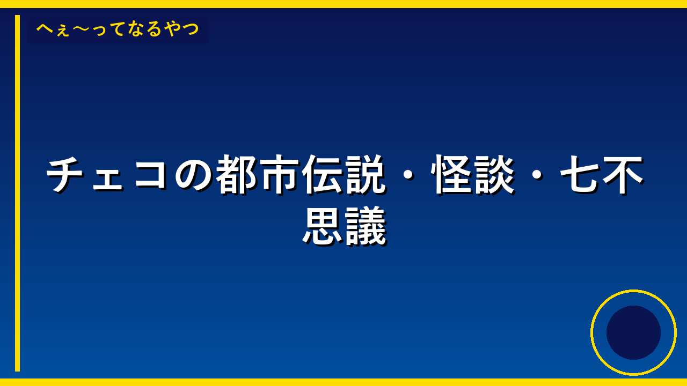

国連奨励図法の地図で北方領土の色変更へ 図法の提唱者が明らかに
リンク先の記事が表示されていないため、タイトルの情報だけからお答えします。 国連が使っている地図の描き方が変わることになりました。北方領土の色が変わるという決まりがこの地図の作った人によって発表されました。この変更は、北方領土がどの国に属しているのかを示す地図の表示が変わることを意味しているので、日本とロシアの関係にも影響を与える大事な決まりになります。世界中の人たちが見る国連の地図が変わることで、北方領土についての考え方が世界的に変わる可能性があります。

人気の料理アカウントを閉鎖した30代女性 誹謗中傷の「犯人」
申し訳ございませんが、提供していただいたリンク先の記事の内容が表示されていないため、要約することができません。記事の本文をテキストで教えていただければ、小学生にもわかりやすい言葉で3〜4文に要約いたします。

那覇空港に航空自衛隊のF15戦闘機が緊急着陸 滑走路が約1時間閉鎖
沖縄の那覇空港に、日本の防衛を守る戦闘機が問題が起きて急に着陸しました。この戦闘機が着陸したせいで、飛行機が離着陸する滑走路が約1時間の間、使えなくなってしまいました。そのため、ほかの飛行機の出発や到着が遅れたり、キャンセルになったりして、たくさんの乗客に迷惑がかかりました。通常は使われない滑走路に戦闘機が着陸することで、空港の運航に大きな影響が出ることが分かります。
GMOの世界ロボット運動会出場、言い出しっぺは新卒1年目の社員？ プロジェクト統括までしていた
GMOという大きな会社が、中国で開かれた世界中のロボットが競う運動会に出場しました。驚いたことに、この出場を提案して、プロジェクト全体をまとめたのは、その年の春に入社したばかりの新入社員の廣本一真さんだったのです。このニュースが重要なのは、経験が少ない新入社員でも、自分の提案で大きなプロジェクトを実現できることを示していて、企業が若い人の意見を大切にしていることがわかるからです。このようなチャレンジがあると、会社に新しい考え方が生まれやすくなり、より良い商品やサービスが生まれる可能性が高まります。
「婚活・恋活」にAI活用、20歳から39歳男女の3分の2 「模擬問答」で客観的意見求める
若い大人たちの多くが、恋人を探すときにAI（人工知能）を使って相談に乗ってもらったり、アドバイスをもらったりしています。AIは友人に相談するより話しやすいと感じている人が大勢います。このように、恋愛や結婚のことでもAIが活躍するようになり、私たちの生活の中でAIがどんどん大切な役割を担うようになってきているのです。
「AI社員」活用、NECは無人部署・DeNAには17体 南場社長「けなげ」と太鼓判
大きな会社のNECやDeNAが、人工知能（AI）を普通の社員と同じように働かせる「AI社員」を使い始めました。NECは人間がいない部署をAIだけで動かし、DeNAはAI社員を17体配置して仕事をさせています。これにより、つまらない作業はAIにやらせて、人間の社員はもっと大切で難しい仕事に集中できるようになります。将来的には、このAI社員のやり方が上手くいったら、他の会社にも売ることを考えているのです。

武豊、八代市の避難所でかき氷をふるまう「強さを感じました」
申し訳ございません。提供いただいたリンクにはアクセスできないため、記事の具体的な内容を確認することができません。 もし記事の本文をテキストで教えていただければ、小学生向けにわかりやすく3〜4文で要約させていただきます。

大谷翔平が負傷者リスト入り ロバーツ監督「最善の策と彼も理解している」
申し訳ございませんが、リンク先の記事の内容が表示されていないため、要約することができません。 記事の本文をテキストでお貼りいただければ、小学生にもわかりやすい言葉で3〜4文の要約をさせていただきます。

大谷翔平が負傷者リスト入り ロバート監督「失望している様子はあった」
野球のドジャースで活躍している大谷翔平選手が、右腕に違和感があるため試合に出られなくなってしまいました。監督は、10月の大事な試合で大谷選手が元気な状態で活躍できるようにするための決断だと説明しています。大谷選手は9月23日の試合までには戻ってくることができると考えられていて、監督も「きっと大丈夫だ」と信じているそうです。

沢尻エリカとデート報道「橋本良亮の首のキスマークはガチだったのね」の声
申し訳ありませんが、記事の詳しい内容を読むことができないため、正確な要約ができません。 URLだけでは記事の本文が見えないので、お手数ですが記事の内容をテキストでコピー&ペーストしていただければ、小学生にもわかりやすく3〜4文で要約させていただきます。

「泣く父親の気持ちがマジで分からん」瀬戸環奈の父の涙を巡り賛否の声
申し訳ありませんが、記事の内容が読み込めないため、正確な要約ができません。 もしニュースの内容を教えていただければ、小学生でもわかる言葉で3〜4文の要約を作成させていただきます。

のんのライブツアーに橋本愛がゲスト出演へ 13年ぶりに歌唱で共演
女優で歌手ののんさんが、ライブツアーに女優の橋本愛さんをゲスト出演として招待することが決まりました。2人は2013年に放送されたテレビドラマ『あまちゃん』で共演して以来、13年ぶりに一緒に歌うことになります。のんさんが橋本愛さんに出演をお願いして、快く引き受けてくれたため、ファンの間でこの懐かしい共演が話題になっています。

異界温泉宿経営＆ダンジョン探索生き残りRPG『アンダー ミュトス』発表。『ポケモン』『テイルズ』『GRANDIA』に携わったクリエイターたちが集った新作
カダスという会社が、『アンダー ミュトス』という新しいゲームを発表しました。このゲームは、温泉宿でのんびり過ごす日常と、怖いダンジョンを探検する冒険の両方を楽しめるゲームです。『ポケモン』や『テイルズ』などの有名なゲームを作った経験のあるクリエイターたちが力を合わせて作ったので、とても注目されています。このゲームが出ることで、新しい面白いゲームが遊べるようになり、ゲーム好きな人たちが喜ぶと思います。

『ファイナルファンタジーVII リベレーション』先行プレイ感想。自由に空を飛び、降りた先には高密度フィールド、圧倒的「オープンワールド」体験
ファイナルファンタジーVIIという有名なゲームの最新作が、自由に空を飛んだり、広い世界を自由に冒険できる「オープンワールド」というゲーム方式で作られました。このゲーム方式は、プレイヤーが好きな場所に行ったり、やりたいことを選んだりできるので、とても楽しい体験ができます。今回、このゲームを試してみたところ、世界がとても詳しく作られていて、どこに行っても面白いことがたくさんあるので、ゲーム好きな人たちはきっと夢中になると思われます。

『ファイナルファンタジーVII リベレーション』浜口Dが目指した、“RPGが苦しい現代”ゆえの進化。飛空艇ありきのオープンワールド、「自分でプレイする意味」があるシリーズ最終作
ゲームの「ファイナルファンタジーVII」の新作が出ることになりました。このゲームは、今のゲームが難しくて疲れてしまう人も楽しめるように作られています。新作では、飛行船で空を飛びながら、自分の好きなように世界を冒険できるようになっていて、プレイヤーが自分でどう進めるかを決められるのが大事なポイントです。これまでのシリーズを完成させる最後の作品として、みんなが楽しく遊べるようにくふうされています。

【『アニメディア2026年10月号』（9月10日発売）に関するお詫びと訂正のお知らせ】
アニメディアという雑誌の2026年10月号に間違いがありました。発売日が9月10日だったのに、雑誌には2026年10月と書かれていて、読者が混乱してしまいました。出版社が間違いに気づいて、申し訳ありませんと謝り、正しい情報を知らせています。このような間違いがあると、読者が雑誌をいつ買ったのか、いつ出た雑誌なのかわからなくなるので、大切な情報を正しく伝えることが重要です。

いちばん好きなBLアニメは？ 2位は「ギヴン」＆「佐々木と宮野」、1位は今年オンエアの学園ラブコメ！ ＜26年版＞
BLアニメについて、みんなが好きな作品をランキングにした調査がありました。2位には「ギヴン」と「佐々木と宮野」という2つの作品が同じくらい人気で、1位には今年放送された学園ラブコメのアニメが選ばれました。このランキングは、アニメ会社がどんな作品を作ればいいか知るために大切な情報になります。みんなの好きなアニメがどれかわかることで、これからもっと面白いアニメが作られるきっかけになるかもしれません。

「サンリオ」ポムポムプリンがおともだちといちご摘み&パーティー♪ マスコットほかグッズ登場
サンリオのキャラクター「ポムポムプリン」がいちご摘みとパーティーをするお話の新しいグッズが出ました。このグッズには、ポムポムプリンとそのお友だちのマスコットやいろいろな商品が含まれています。サンリオはかわいいキャラクターのグッズをいっぱい作っている会社で、こういった新しいグッズは子どもたちや大人たちに人気があります。このグッズが出ることで、ポムポムプリンのファンがさらに増えたり、もっと好きになったりするかもしれません。

JR東海の「映画ちいかわ」コラボ 引換証での対応へ切り替え
JR東海と映画「ちいかわ」がコラボして配っていたミニトートバッグが、とても人気だったので、配り方が変わることになりました。これからは、駅でもらった引換証を持って行って、別の場所で商品と交換してもらう方法に変わります。引換証をなくしてしまった場合は、もう一度作ってもらうことはできないので、大切に保管しておく必要があります。

USJ「ハロウィーン・ホラー・ナイト」初のR-18アトラクションが登場
ユニバーサル・スタジオ・ジャパン（USJ）のハロウィーンイベントで、パーク史上初めて18才以上だけが体験できる「残像」というアトラクションが登場しました。このアトラクションは大人向けの恐ろしい体験ができるもので、体験した人たちは「今までにない不気味な雰囲気だった」「想像する力が刺激された」と感想を述べています。大人向けの新しいアトラクションが登場することで、USJはより多くの大人のお客さんを集めることができるようになります。

焼き鳥チェーン「鳥貴族」均一価格を10月から410円に値上げへ
# 焼き鳥チェーン「鳥貴族」の値上げについて 焼き鳥のお店「鳥貴族」が、10月からすべての商品の値段を今の298円から410円に上げることになりました。このお店は、どの商品でも同じ値段という「均一価格」が特徴でしたが、材料費や人件費が高くなったため値上げが必要になったのです。値段が上がると、今までのように気軽にたくさん食べに来る人が減ってしまうかもしれません。でも、このお店が続けて営業できるようにするためには、この値上げが大事な決断なのです。

「早く帰りたい」日本を旅した外国人観光客の多くが「混雑」に不満抱く
日本を旅行した外国人の多くが、駅や観光地が混雑しすぎていて、早く帰りたいと感じています。京都や東京などの有名な場所では、人が多すぎて、ゆっくり観光を楽しむことができないのです。この問題が重要なのは、外国人観光客が日本を好きになってくれることで、日本の経済が良くなるからです。もし観光地の混雑が続くと、外国人が日本への旅行をやめてしまい、ホテルやお店の売上が減ってしまうかもしれません。

中国・山東省青島市の造船所で貨物船火災20人死亡 外国船から出火
中国の山東省青島市にある造船所で、外国の貨物船が火事になり、20人の人が亡くなりました。この火事は、船を直す工事をしている時に起きたと考えられています。大事な船が壊れてしまったので、世界中の荷物の運ぶ仕事に影響が出る可能性があります。また、このような大きな事故を防ぐために、安全な工事の方法をもっと厳しく守る必要があることがわかりました。

2018年に汚職で有罪のイメルダ夫人が逆転無罪「証拠不十分」と結論
イメルダ夫人という昔フィリピンの大統領の妻だった人が、お金を不正に使ったという罪で裁判にかけられていました。2018年に有罪と判断されましたが、今回上級の裁判所が「証拠が足りないから無罪にする」と判断を変えました。これは、昔の判断が間違っていたかもしれないということで、とても重要な裁判の結果です。このように裁判の判断が覆ることで、法律がどのように使われるのかが問題になっています。
プラハの天文時計に宿る呪い――製作者の復讐が生んだ100年の沈黙
チェコ・プラハの観光名所として知られる天文時計には、製作者による呪いの伝説が残されている。時計が止まると災厄が訪れるという言い伝えは今も信じられている。


見ると記憶が消える？都市伝説「くねくね」の怖すぎる正体
2003年にネット掲示板で生まれた怪異「くねくね」。目撃者が発狂し、正体を認識すると脳が壊れるという奇妙な特徴を持つこの存在は、なぜここまで恐れられるのか。


令和元年の1円玉は502枚だけ！財布に眠る激レアコインの秘密
普段何気なく使っている1円玉。でも令和元年製は一般に流通しておらず、わずか502枚しか存在しない。もし手元にあれば10万円超えの価値になるかも？